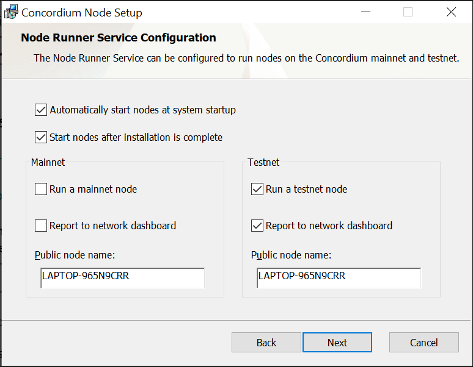
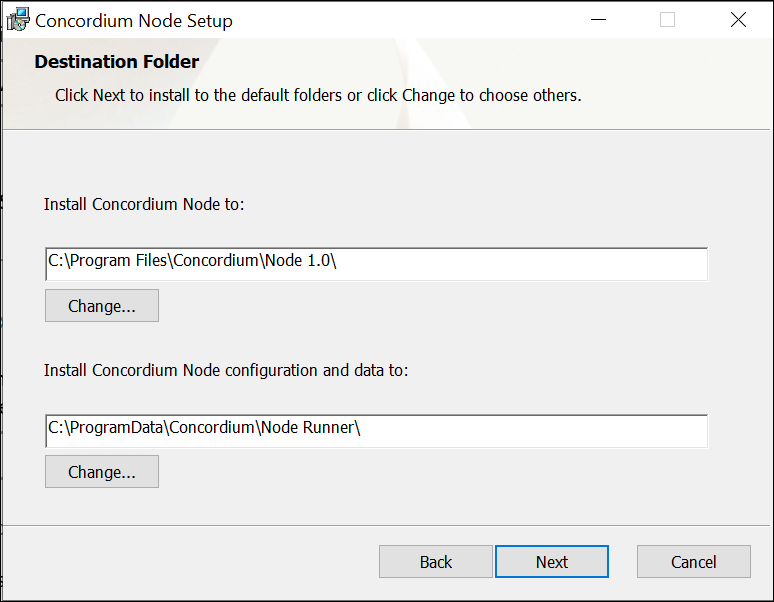
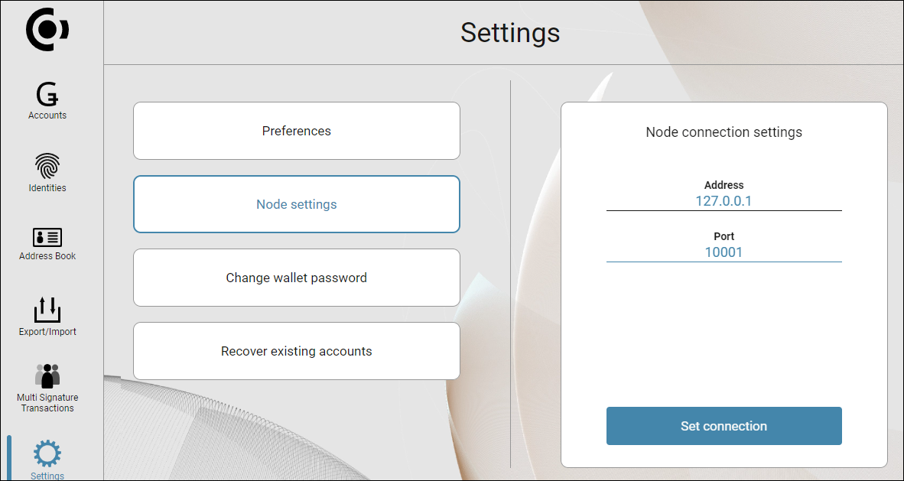
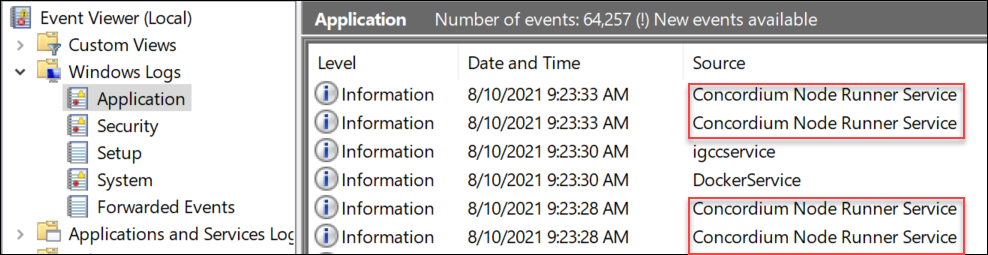

Run and manage a node on Windows¶
This guide describes how organizations can run and manage a node on the Concordium network from a Windows computer. You can also run a node using Docker, Ubuntu, or macOS.
If you want to run a baker node on Windows, see Configure a node on Windows as baker.
Prequisites¶
Run Windows 10 or later or Windows Server 2019 or later.
Meet the minimum system requirements for running a node.
Install/upgrade and run a node¶
Note
If you are upgrading from an older node version to a newer node version, it is a good idea to stop the node before running the installer for the new version so that you do not need to restart your computer. To do this, open Task Manager and stop the concordium-node.exe program for the node you want to upgrade. See Verify that the node is running for details about how to do this.
Additionally, if you have done special configuration of your node, you may want to back up the service config file prior to upgrade, then replace the new one with your backup. Or you can re-enter your values after upgrading. See Configure the Concordium Node Service for information about how to change the service configuration settings.
Go to Downloads, and download the latest Windows Installer package (.msi file).
In the folder where you downloaded the .msi file, double-click the .msi file. The Concordium Node Setup Wizard opens. Select Next. If you see a message saying Windows protected your PC, select More info, and then select Run anyway.
Accept the terms of the End-User License Agreement and select Next.
Set the Destination folders. The default is C:ProgramDataConcordiumNode Runner.
In Install Concordium Node to, specify where to store the executable code.
In Install Concordium Node configuration and data to, specify where to store the node configuration and the blockchain databases and logs. Choose a drive that has sufficient space to accommodate the database and is sufficiently fast. For more information, see Requirements for running a node.

Select Next and configure the Node Runner Service. You have the following options:
Automatically start nodes at system startup: When selected, the node runs when the system starts. Choose this option when you plan to use the node frequently and need it to be up-to-date at short notice. If you don’t select this option, you’ll have to start the node manually when required, for example, when you want to use the Desktop Wallet or concordium-client. If you choose to start the node manually, it might take longer for the node to get up-to-date with the blockchain depending on when the node was last up-to-date.
Start nodes after installation is complete: The node will automatically start running after the installation is complete. Do not choose this option if you want to make further configuration changes before starting the node.
Mainnet or Testnet: Mainnet is the Concordium production blockchain where actual transactions occur, whereas testnet is for test and development. Select your preferred network for running the node: Run a mainnet node or Run a testnet node. You can run a node on just the mainnet or the testnet, or run nodes on both at the same time.
Report to the network dashboard: Select this option if you want to publish your node statistics to the relevant dashboard when the node is running. Go to the mainnet or testnet dashboard to view the statistics:
Public node name: Specify the name of your node as you want it to appear on the network dashboard if the node reports to the network dashboard.

Select Next, and then select Install to begin the installation. The Concordium Node is installed. If you see a message saying Do you want this app from an unknown publisher to make changes to your device?, select Yes. This message appears because the installation requires administrative permissions. If you’re not logged in with an administrative account, you’ll have to provide credentials for an administrator account to continue the installation.
Select Finish to complete the installation. The following shortcuts are now available from the Start menu:
Start Concordium Node Service: Starts the node
Stop Concordium Node Service: Stops the node
Configure Concordium Node Service: Opens the configuration file.
Third Party Licenses: Shows the licenses the third party components are distributed under.

{kind=link}
{kind=link}
Verify that the node is running¶
The node runs as a background service with no user interface. To verify that it’s running, use the Task Manager.
Search for task in the Search bar, and then select Task Manager.
Select the Details tab, and verify that the following are running:
node-runner-service.exe, which is the service.concordium-node.exefor each node you are running. For example, if you’re running a node on both testnet and mainnet, you’ll see two instances of concordium-node.exe.node-collector.exefor each node that reports to the network dashboard.
Select the Services tab and verify that
ConcordiumNodeis running.
If the node is running properly and reporting to the network dashboards, you can see it on the dashboard.
Enable inbound connections¶
If you are running your node behind a firewall, or behind your home router, then you will probably only be able to connect to other nodes, but other nodes will not be able to initiate connections to your node. This is perfectly fine, and your node will fully participate in the Concordium network. It will be able to send transactions and, if so configured, to bake and finalize.
However you can also make your node an even better network participant
by enabling inbound connections. By default, concordium-node listens
on port 8888 for inbound connections on Mainnet and on port 8889 for inbound connections on Testnet. Depending on your network and
platform configuration you will either need to forward an external port
to 8888 or 8889 on your router, open it in your firewall, or both. The
details of how this is done will depend on your configuration.
Connect a node to the Desktop Wallet¶
You can also verify that a node is running by connecting it to the Desktop Wallet.
In the Desktop Wallet, go to Settings, and then select Node settings.
If you’re running the mainnet version of the Desktop Wallet, you must connect to a mainnet node. In the Address field, enter 127.0.0.1 and in the Port field enter 10000.
If you’re running the testnet version of the Desktop Wallet, you must connect to a testnet node. In the Address field, enter 127.0.0.1 and in the Port field enter 10001.

Select Set connection. If the connection works and the node is running properly, there’s a message saying Successfully connected.
{kind=link}
Change the node startup settings¶
If you want to change whether the node runner service starts automatically, you can use the Services app.
Search for services in the Search bar, and then select Services.
Right-click Concordium Node Runner Service, and then select Properties.

On the General tab, select the relevant Startup type from the list, and then select OK or Apply.
Configure the Concordium Node Service¶
You can change the mainnet or testnet node configuration with the Configure Concordium Node Service.
Search for configure concordium node in the Search bar, and then select Configure Concordium Node Service. If you see a message saying Do you want to allow this app to make changes to your device?, select Yes. The configuration file opens in Notepad.
For detailed information about all the configuration options, see Concordium node runner service configuration.
View the node log¶
You can find the node logs here:
Mainnet:
C:\ProgramData\Concordium\Node Runner\mainnet\logsTestnet:
C:\ProgramData\Concordium\Node Runner\testnet\logs
If you specified a different installation folder for the configuration and data, the path might be different.
The files mainnet.log and testnet.log contain the latest logs, with mainnet.0.log and mainnet.1.log containing progressively older logs and the same for testnet.0.log and testnet.1.log.
The log files are rolled when the latest log file exceeds 50 MB. This means that mainnet.0.log is renamed to mainnet.1.log (replacing the old file if present), mainnet.log is renamed to mainnet.0.log, and a new, empty testnet.log is created.
The same goes for testnet. testnet.0.log is renamed to testnet.1.log (replacing the old file if present), testnet.log is renamed to testnet.0.log, and a new, empty testnet.log is created.
When nodes are stopped or started, this is also recorded in the system event log.
Search for event in the Search bar, and then select Event Viewer.
Select Windows Logs, and then under Source look for Concordium Node Runner Service.

{kind=link}
Synchronize a node with the network¶
When you start a node for the first time, it can take a while to synchronize the node with the rest of the network, since it has to get all blocks from its peers.
You can improve the performance by downloading the blocks before starting the node. While it will still take time to process the blocks, it will typically be faster than requesting them from peers.
Download the file with the blocks from the following addresses:
Mainnet: https://catchup.mainnet.concordium.software/blocks_to_import.mdb
Testnet: https://catchup.testnet.concordium.com/blocks_to_import.mdb
The file is downloaded to your default download location.
Search for configure concordium node in the Search bar, and then select Configure Concordium Node Service. The configuration file opens in Notepad.
Add the following line to the
[node.mainnet]or[node.testnet]section:node.args = ['--import-blocks-from', 'C:\Downloads\blocks_to_import.mdb']
Where you replace
C:\Downloads\blocks_to_import.mdbwith the full path to the downloaded file. Save the configuration file.In the Search bar, search for and select Stop Concordium Service Node to stop the node, and then search for and select Start Concordium Service Node to restart the node.
Open the configuration file again, remove the line you just added, and then save the file. This ensures that these blocks will not be processed again the next time the node is restarted.
Go to the relevant dashboard to monitor when the node has caught up with its peers on the blockchain. You do so by comparing the finalized length of the chain with the length of your node. If they match, your node has caught up.
Uninstall a node running on Windows¶
In the Search bar, enter add, and then select Add or Remove Programs.
Under Apps & features, search for Concordium, and then select Concordium Node.
Select Modify, and then in the Node Setup Wizard select Next.
Select Remove. If you plan to remove the node permanently, select Remove node data folder to remove all files and subfolders in the folder. Don’t select this option if you are only removing the node to perform an upgrade or otherwise want to keep the data, logs, or any other files in the data folder.
Select Next, and then select Remove.
If the service is running, when you uninstall it you’ll see a message saying that the system has to restart to update files and services. Select OK. (If the service is not running, you’ll not see this message). If you see a message saying Do you want to allow this app from an unknown publisher to make changes to your device?, select Yes.
Select Finish, to complete the removal of the Concordium node.
To verify that the node has been removed, in the Search bar, enter task manager, and then select the Task Manager.
Go to the Details tab and verify that node-collector.exe has been removed from the list, and then go to the Services tab and verify that ConcordiumNode has been removed from the list.
Support & Feedback¶
If you have questions or feedback, join us on Discourse, or contact us at support@concordium.software.